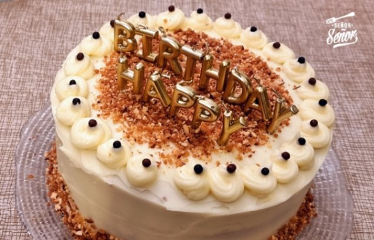
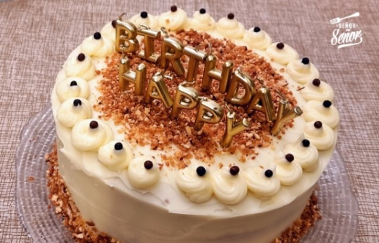
 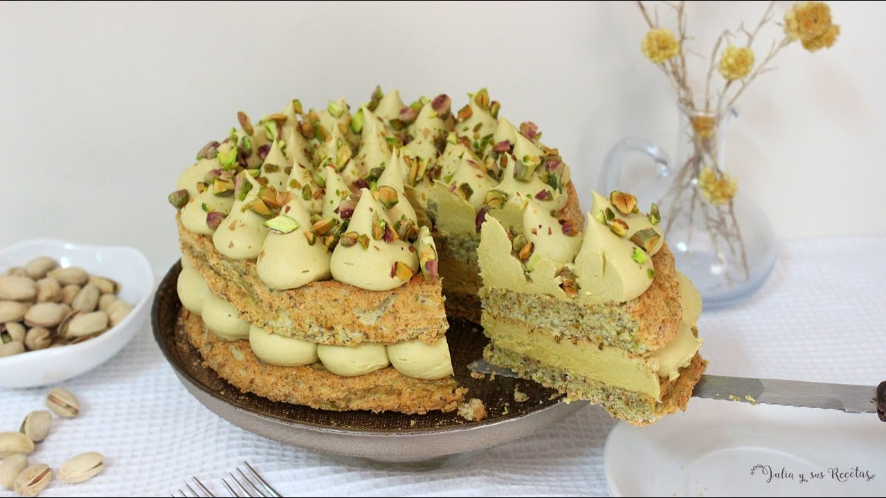
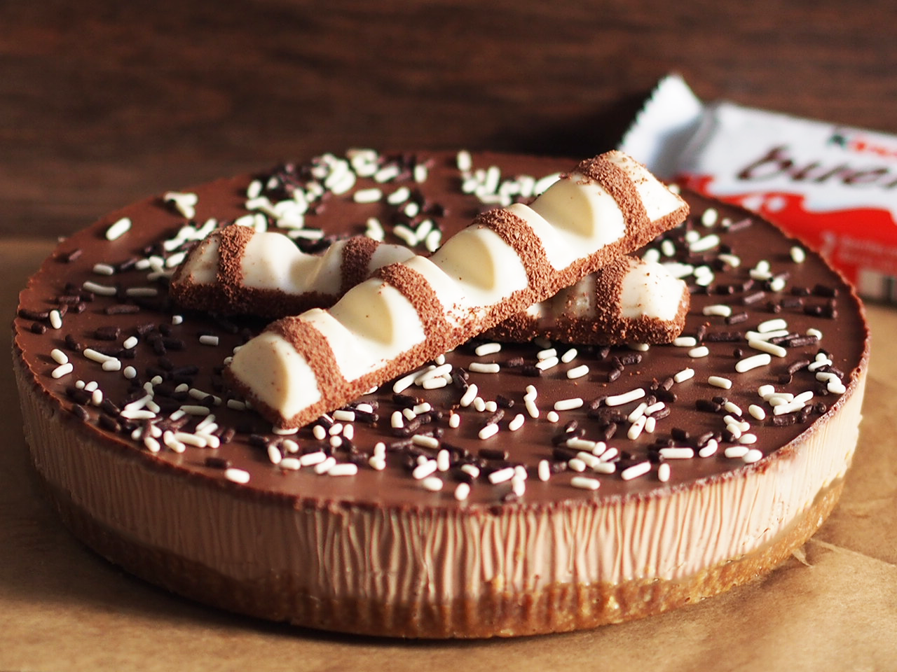
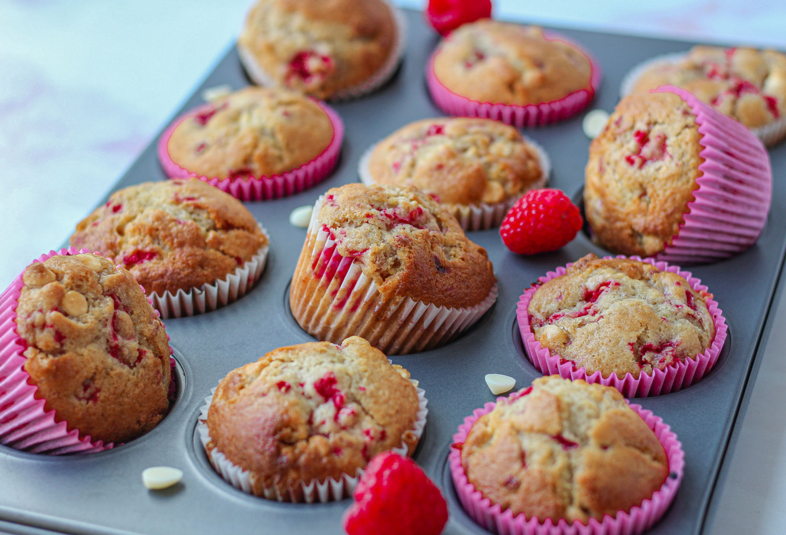
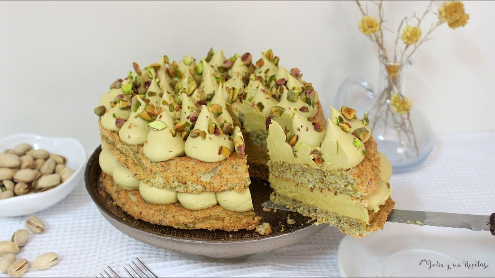
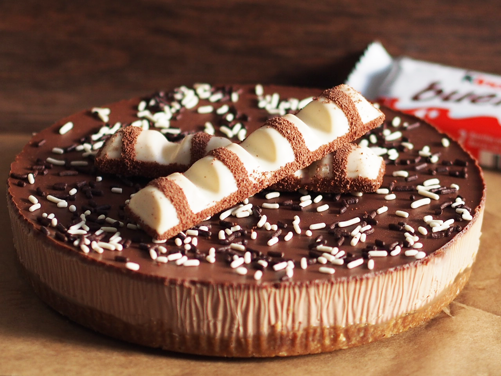
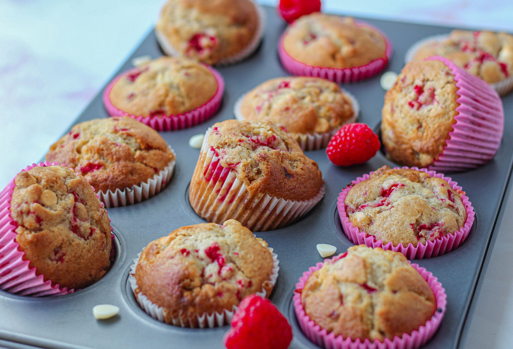
Deliciosos postres y pasteles artesanales
Bienvenido a nuestra pastelería, un espacio donde cada dulce nace con dedicación, creatividad y los mejores ingredientes. Aquí encontrarás una variedad de productos elaborados artesanalmente: desde pasteles clásicos y tartas modernas, hasta pequeños bocados pensados para alegrar cualquier momento del día.
Además de nuestra selección diaria, también preparamos creaciones especiales para eventos y celebraciones: cumpleaños, bodas, bautizos, reuniones familiares o corporativas. Diseñamos cada encargo de forma personalizada para que tu ocasión tenga el toque dulce perfecto.
Si deseas hacer un pedido, solicitar un presupuesto o simplemente tienes alguna pregunta, visita nuestra página de contacto. Estaremos encantados de atenderte y ayudarte a convertir tus ideas en un postre inolvidable.
Déjate cautivar por nuestros productos estrella, una selección de postres irresistibles que combinan técnicas artesanales con un toque moderno. Cada bocado está pensado para enamorar tus sentidos y ofrecerte una experiencia dulce inolvidable. Estos son los favoritos de nuestros clientes… ¡y estamos seguros de que también se convertirán en tus preferidos!
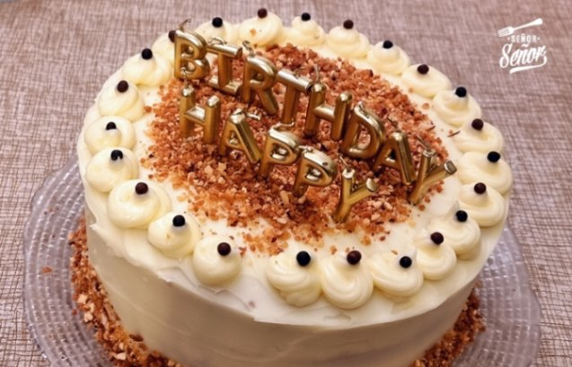
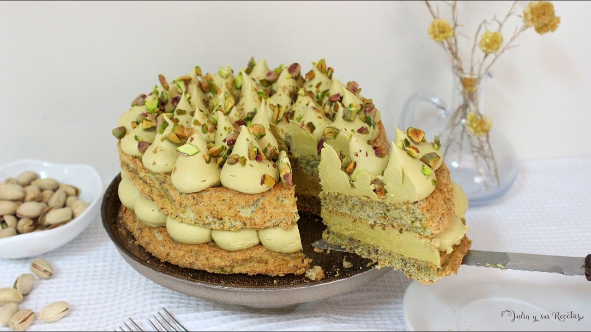
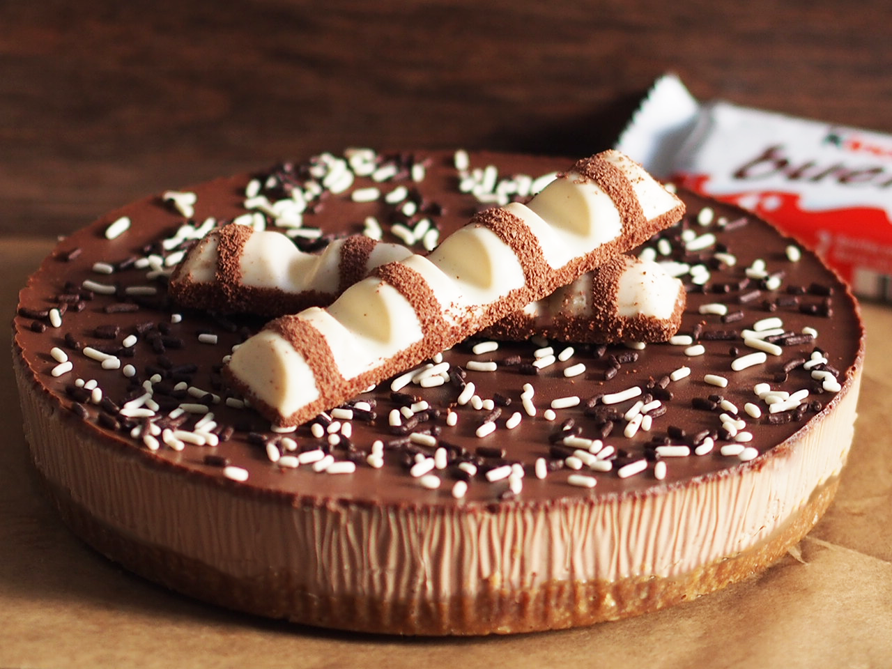
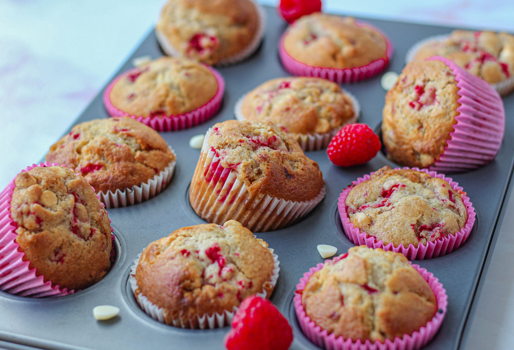